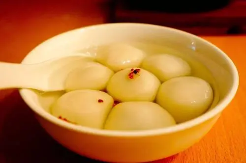

秋分，是二十四节气之第十六个节气，秋季第四个节气。斗指酉；太阳达黄经180°；于每年的公历9月22-24日交节。 秋分这天太阳几乎直射地球赤道，全球各地昼夜等长 [16] 。秋分，“分”即为“平分”、“半”的意思，除了指昼夜平分外， 还有一层意思是平分了秋季。秋分日后，太阳光直射位置南移，北半球昼短夜长，昼夜温差加大，气温逐日下降。

地址：内蒙古农业大学计算机与信息工程学院
邮编：010010
版权所有©：内蒙古农业大学计算机与信息工程学院 雷东宸